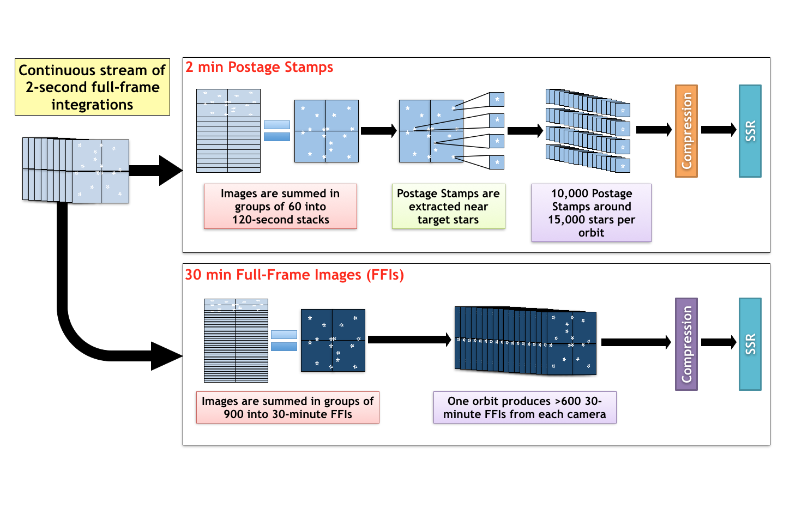
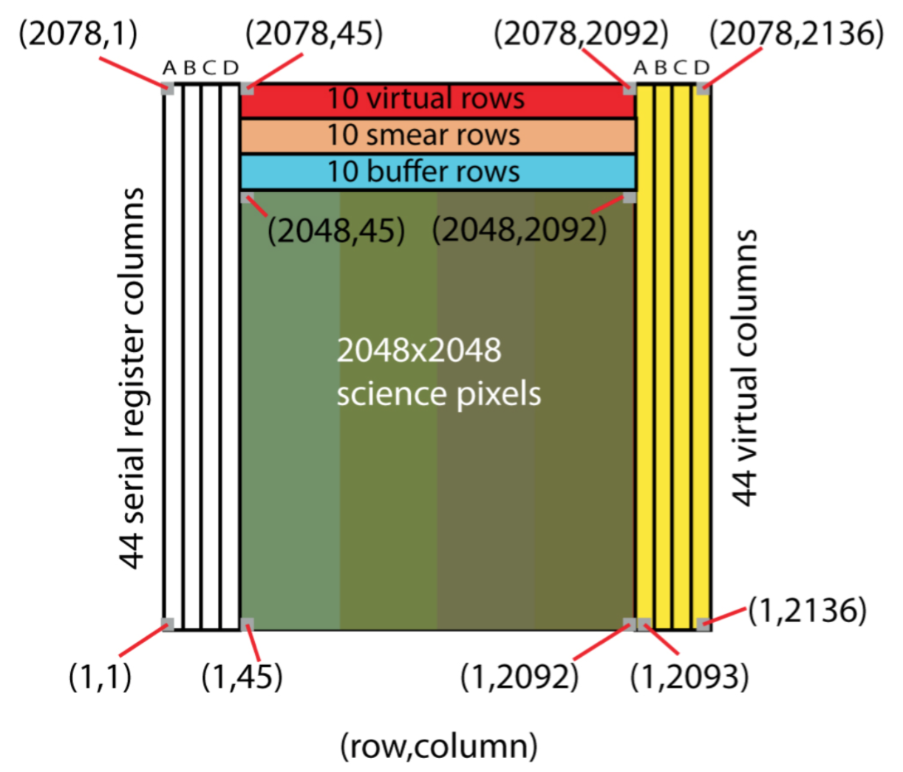
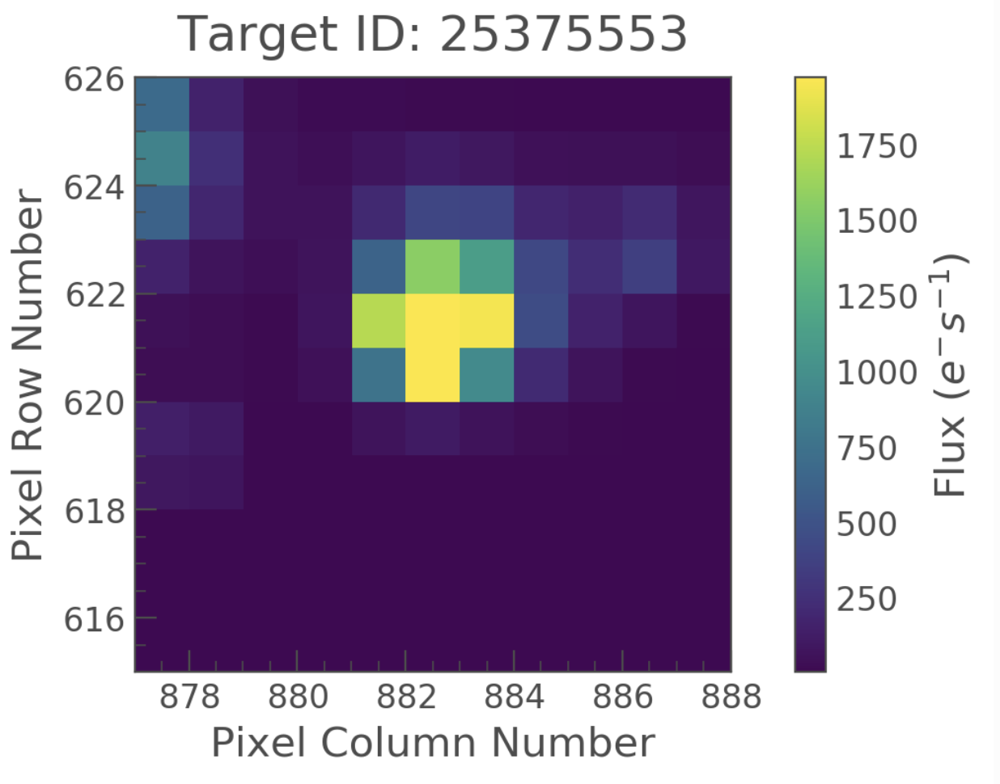
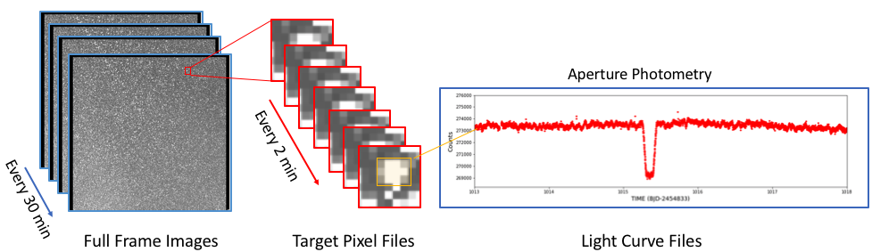

During science operations the four camera take a continuous stream of images each with a 2 second exposure.
From these two second integrations there are several data products produced by the TESS mission, these include postage stamps, also known as target pixel files (TPFs), of selected targets and full-frame images (FFIs). Each of these products are created on-board and are co-adds of the two second exposures. Data products are provided in fits formats with multiple extensions which provide additional information on calibration, cosmic-ray rejection, and in the case of the TPFs aperture masks indicating the pixels used in photometry.

Representation of how the 2 min postage stamps and 30 min FFIs are created.
The TESS mission page at MAST contains the latest news and updates on TESS products. There are three main data products produced by the TESS pipeline, these are discussed below.
Full Frame Images
A Full Frame Image (FFI) is a collection of science and collateral pixels observed simultaneously. A single FFI is the full set of all science and collateral pixels across all CCDs of a given camera. FFIs were taken every 30 minutes during science operations in the primary mission. In the first extension of the mission, FFIs were taken with a cadence of 10 minutes. Beginning in Cycle 5, the second extension of the mission, FFIs will be taken with a cadence of 200 seconds.
There are 16 CCDs on the spacecraft, each of which is supported by 4 output channels. TESS FFI files are in FITS format and contain all pixels on a single CCD for a single 30 minutes, 10 minutes, or 200 seconds (depending on the Cycle) cadence observation. FFI data is provided in three types: uncalibrated, calibrated, and uncertainty.
Uncalibrated FFI data is provided in one file with two Header/Data Units (HDUs): a primary header and the CCD image header and data.
The calibrated image and its uncertainty will be provided in a separate file with several HDUs: a primary header, the CCD calibrated image header and data, the CCD uncertainty image header and data, and the cosmic ray corrections binary table header and data. Cosmic Ray Mitigated (CRM) FFIs are the same as FFIs except they will be collected with the onboard cosmic ray mitigation enabled.
To understand more about FFIs and how to use the data please visit this page.

Schematic of a TESS CCD
Target Pixel Files (TPFs)
The Target Pixel Files are the rawest form of target-specific data that will be available at MAST. For each 2 minute or 20 second cadence target in an observing sector, TESS only acquires the pixels contained within a predefined mask. These pixels are used to create the data found in the light curve files. Each target pixel file packages these pixels as a time series of images in a binary FITS table. The intent of these files is to provide the data necessary to perform photometry on the raw or calibrated data when needed (or desired) to understand (or improve) the automated results of the TESS pipeline. In the binary table, the pixel values are encoded as images. Each element in the binary table contains the pixels from a single cadence.
A sample image from a TESS mission Target Pixel File is shown below:

An example of a Target Pixel File. The pixel column and row number are indicated along with the flux in electrons per second.
If a target is observed in more than one sector, multiple TPFs will be created for that target but they may be made available in separate deliveries to the MAST. The images in the TPF will have dimensions equal to the bounding box of the pixels that were collected for that target. Depending on the location of the target on a CCD, a TPF may therefore contain pixels that do not contain stored data. TPFs will have several HDUs: a primary header, a binary table of images header and data, the aperture mask image header and data, and the cosmic ray correction binary table header and data. The aperture mask image provided with each TPF file indicates the pixels that were collected for the target and which of those pixels were used for photometry.
To understand more about TPS and how to use the data please visit this page.
There are two flavors of TPFs,
- 2 minute cadence (all cycles)
- 20 second cadence (Cycle 3 and onward)
Light Curve Files
Light Curve Files contain flux time series data and are produced for each 2 min and 20 second cadenced target (from the TPFs) using Simple Aperture Photometry (SAP). These are used to search for transiting planets and other astrophysical phenomena. The flux and uncertainties are provided at each cadence, with NaNs filling in any missing data values. TESS light curves are FITS format files that contain the output of the photometric extraction and subsequent systematics removal (cotrending) performed by the SPOC algorithms. A single Light Curve File contains the data for one target for on observing sector. Identical to the case for TPFs, if a target was observed in more than one TESS sector, multiple Light Curve Files will be created but they may be made available on the MAST in separate deliveries. Light Curve Files will also consist of several HDUs: a primary header, the light curve photometry binary table header and data, and the aperture mask image header and data. The aperture mask image provided with each light curve is the same as that provided with the corresponding target TPF file.
To learn more about how to use light curve files please visit this page.

Photometric data products.
Secondary data products
There are several secondary TESS data products, these include the following
Collateral data
Collateral data includes pixels from leading and trailing virtual columns, leading and trailing masked rows, and trailing virtual rows (in units of ADC counts). Additional collateral data includes auxiliary instrument models which describe the calibration effects. Pixel calibration is performed on both the cadence pixels and Full Frame Image (FFI) pixels, and calibrated science pixel values, in photoelectrons, along with their uncertainties are archived at the MAST.
Auxiliary data products
Auxiliary data consists of focal plane characterization files, engineering and telemetry data used to calibrate the images and determine the status of the spacecraft. A full list is available from the MAST.
Black level: the mean correction estimated from the virtual black pixel values. There is one metric value per cadence for each CCD readout.
Smear: the correction for shutterless operation. The smear will be less critical for TESS than was needed for Kepler due to the use of frame-transfer in TESS.
Gain model: the linear approximation to the CCD digitizer performance, in units of photoelectrons per digitizer count. Each TESS CCD has its own gain model. Each CCD's gain model contains separate values for each of the 4 readouts on the CCD.
Flat field: a model which describes the pixel-to-pixel variation in response to photons. This allows the variations in individual pixel response to be removed in calibration. The flat field model is 2048 x 2048 for each of 16 CCDs.
Linearity: a model which describes the deviations from linearity of the CCD digitizers. Each CCD has its own linearity model with separate values for each of the 4 readouts on the CCD. The linearity model is used in conjunction with the gain model of each CCD to convert from a measured number of counts to a flux in photoelectrons.
Read noise: an estimate of the variation in pixel values which is caused by the digitization process itself. This is separate from the noise due to Poisson variation in the number of photons collected from a target (known as "shot noise"). The read noise model is used in the calibration process to estimate the uncertainty in pixel values, which is incorporated into the uncertainty propagation process. Each CCD has its own read noise model with separate values for each of the 4 readouts on the CCD.
2-d black model: the expected readout of a given CCD, in counts, which is observed when no light is incident upon the detector. The 2-d black model is subtracted from the raw pixel values as part of the calibration process. The 2-d black model also incorporates the expected black values of collateral pixels. Each CCD has a separate 2-d black model. The size of the 2-d black model is 2078 x 2136 for each of 16 CCDs.
Dark current: the mean dark current calculated from the virtual row pixel values. There is one metric value per cadence for each readout.
Cotrending basis vectors
Co-trending basis vectors (CBVs) represent the set of systematic trends present in the ensemble flux data. CBVs are provided for each operational sector of the mission. These are derived by the TESS pipeline from a Principle Component Analysis and used to mitigate systematic artifacts within the target light curves. If TESS users see residual systematic problems within their light curve data, the CBVs can be employed in performing a manual photometric correction, more tailored towards the user's science.
Simulated data
During the development of a space mission, several End-to-End tests are conducted, which include testing the pipeline and the data transfer between different institutions. To do this various data products are simulated, these data can be very useful to the community, and aid potential TESS users in the development of tools and in assessing the feasibility of an investigation. Data for the "End-To-End 6" can be found here.